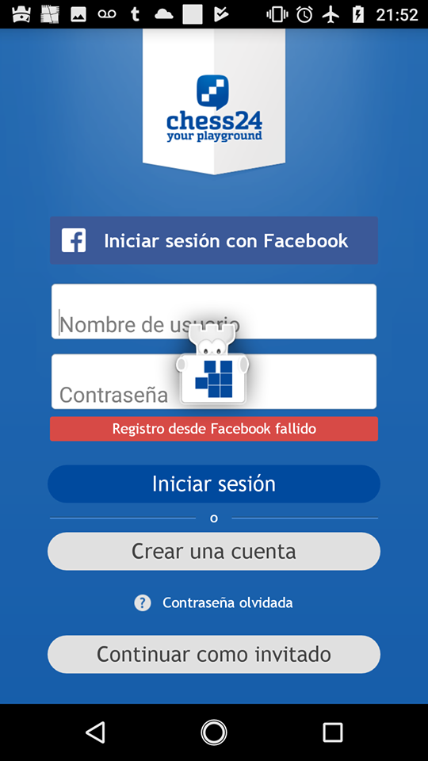

Good eventual connectivity example

If the user starts the application without internet, the "login" button shows a popup indicating the lack of internet. This message is clear about the situation so the user can react about it.
Why is this happening?
For login and create account options, the onFailed method of the request is overridden, there they display the error dialog seen in the image
Bad eventual connectivity example

However, if the "login with facebook" button is clicked and there is no internet. A loading dialog appears and never dissapears.
To make things worse, the user can not dismiss the dialog unless they close the app and start it again.
Why is this happening?
In the method that they are using to request facebook access they show a dialog with the login screen. In there, they set an atribute called "isCancellable" to false. This way, they user is not able to cancel the dialog
More important however, is that there is no "dismissDialog" in any other of the facebook methods, like "onFailed"
What should they do?
They have a method called hideDialogWaiting, which they execute when the onSuccess method is called. However, if the onFailed method is called, the hideDialogWaiting method is not called, and therefore the dialog is stuck there forever.